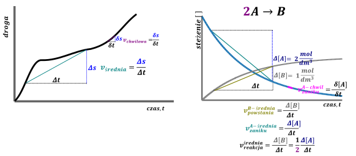

Kinetyka chemiczna to dział chemii mówiący o szybkości reakcji – zależności stężeń reagentów od czasu zachodzenia reakcji oraz czynnikach, od których ta szybkość zależy.

Szybkość zaniku lub powstawania reagenta zdefiniowana jest, jako zmiana stężenia (czasem ciśnienia cząstkowego dla gazów) tegoż reagenta w czasie. Jest to analogiczne do prędkości w fizyce jako przebytej (zmiany) drogi w danym czasie. Analogicznie do fizyki możemy zdefiniować dwa rodzaje szybkości/ prędkości: prędkość średnią i prędkość chwilową.
Prędkość średnia jest prędkością mówiącą o ilości przebytej drogi w skończonym czasie podczas realnie mierzalnych zmian czasu. Przykładem jest przebycie \(200km\) w przeciągu \(4h\) - z łatwością obliczymy prędkość średnią jako \(\frac{200}{4} = 50\frac{km}{h}\). Natomiast w żaden sposób obliczona tak prędkość nie mówi, z jaką prędkością poruszamy się w danej chwili. Mówi o tym prędkość chwilowa, która np. wyświetlana jest w danej chwili na prędkościomierzu albo podczas pomiaru fotoradarem. Należy zauważyć, że im krótszy odcinek czasu będziemy rozpatrywać przy obliczaniu prędkości średniej tym wynik powinien być bardziej zbliżony do prędkości chwilowej, z jaką się poruszamy w danej chwili; tzn. Jeżeli wiemy, że prędkość średnia w przeciągu 4minut wynosiła \(50\frac{km}{h}\) to jest duża szansa, że z taką predkością rzeczywiście poruszaliśmy się, natomiast, jeżeli jest to prędkość średnia dla 4 sekund to już w zasadzie jesteśmy pewni, że poruszaliśmy się mniej więcej z taką predkością, o ile nie mieliśmy jakiegoś gwałtownego przyśpieszenia albo hamowania.
Analogicznie jest dla prędkości średniej zaniku/ powstawania danego reagenta, im mniejszy odcinek czasu będziemy rozważać tym uzyskiwany wynik będzie bardziej zbliżony do prędkości średniej. Ogólnie prędkość średnią można zdefiniować, jako pochodną zmiany stężenia w czasie, ale nie wnikajmy w rachunek pochodnych, gdyż nie ma go na maturze z chemii. Na potrzeby szkoły przyjmijmy, że prędkość średnia zaniku/ powstawania danego reagenta jest stosunkiem zmiany stężenia tegoż reagenta w odcinku czasu, tylko takim bardzo, bardzo małym. Możemy to zapisać jako:
\[v_{zaniku}^{A} = \frac{\delta\lbrack A\rbrack}{\delta t}\]
\[v_{powstaje}^{B} = \frac{\delta\lbrack B\rbrack}{\delta t}\]
Jeżeli rozważymy reakcję \(2A \rightarrow B + 3C\), wówczas, jeżeli np. W przeciągu 2h godzin rozłożyły się \(3mole\ A\) to powstało \(1.5\ mol\ B\) i \(4.5\ mol\ C\). Prowadzi to do
\[v_{zaniku}^{A} = \frac{3}{2} = 1.5;v_{powtawania}^{B} = \frac{1.5}{2} = 0.75;\ v_{powtawania}^{C} = \frac{4.5}{2} = 2.25\]
Problem polega na tym, iż nie możemy zdefiniować szybkości reakcji, jako zmiany stężenia reagenta w czasie, bo wówczas szybkość tak zdefiniowana zależałaby od tego na który reagent patrzymy. Jest to bez sensu, bo należałoby się domyślać, na który reagent patrzył autor zadania. Pomijając, że w Polsce pewnie by tak zostało, jest to niespójne. Aby ominąć ten problem szybkość reakcji definiuje się, jako zmianę stężenia danego reagenta w czasie podzieloną przez jego współczynnik stechiometryczny:
\[v_{reakcji} = \frac{1}{wsp_{stech}^{reagenta}}*\frac{\delta\lbrack reagenta\rbrack}{\delta t} = \frac{1}{wsp_{stech}^{reagenta}}*v_{reagent}^{\frac{zanik}{powstawania}}\]
Korzystając z tego wzoru można powiedzieć, iż dla reakcji powyżej, rozpatrując kolejne reagenty dostajemy
Rozpatrując reagent \(A:v_{reakcji} = \frac{1}{2}*\frac{3}{2} = 0.75\)
Reagent \(B:v_{reakcji} = \frac{1}{1}*\frac{1.5}{2} = 0.75\)
Reagent \(C:v_{reakcji} = \frac{1}{3}*\frac{1.5}{2} = 0.75\)
Jednocześnie taka definicja szybkości definiuje, że jej jednostką musi być
\[\left\lbrack v_{reakcji} = \frac{1}{wsp_{stech}^{reagent}}*\frac{\delta\lbrack reagenta\rbrack}{\delta t} = \frac{\frac{mol}{dm^{3}}}{s} = \frac{mol}{dm^{3}s} \right\rbrack\]
Ewentualnie zamiast sekund może być inna jednostka czasowa (minuta, godzina, rok świetlny). Spotyka się również stałe gdzie zamiast jednostki stężenia używa się ciśnienia.
Szybkość reakcji zależy od następujących czynników:
- stężenia i ciśnienia substratów (lub innych reagentów w wyjątkowych przypadkach) – im większe stężenie/ ciśnienie tym częściej cząsteczki się zderzają, a więc zwiększa to prawdopodobieństwo zajścia reakcji chemiczniej.
- temperatura – im większa temperatura tym cząsteczki mają większą energię, a więc jest większe prawdopodobieństwo zajścia reakcji podczas zderzenia.
-katalizator/ inhibitor. Związki te zmieniają energię aktywacji reakcji, czyli minimalną energię, z jaką muszą się zderzyć cząsteczki, aby reakcja zaszła. Powoduje to podwyższenie tzw. stałej szybkości reakcji jednocześnie możliwa zmiana równania kinetycznego.
-mieszanie Mieszanie ogranicza tzw. ograniczenia dyfuzyjne, reakcja szybciej zachodzi mieszana niż niemieszana, ale wpływ jest mieszania jest delikatnie po***any)
- dla ciał stałych oraz reakcji w różnych fazach wpływ ma rozdrobnienie (lub wymieszanie) co powoduje zwiększenie powierzchni kontaktu reagentów.
Równanie kinetyczne jest to wzór uzależniający chwilową szybkość reakcji od stężeń substratów lub w wyjątkowych wypadkach innych reagentów, katalizatora lub produktów i stałej szybkości. Dla reakcji \(aA + bB + cC \rightarrow dD\) równania kinetyczne ma najczęściej postać:
\[v_{chwil} = k\lbrack A\rbrack^{\alpha}\lbrack B\rbrack^{\beta}\lbrack C\rbrack^{\gamma}\]
w którym:
\(k\)- stała szybkości reakcji –wartość zależy od reakcji, temperatury i katalizatora, ze wzrostem temperatury jej wartość rośnie, również rośnie na skutek dodania katalizator, (jeżeli katalizator nie zmienia mechanizmu reakcji tzn. nie mamy zmiany równania kinetycznego)
\(\lbrack A\rbrack,\ \lbrack B\rbrack,\lbrack C\rbrack\) – stężenia molowe substratów, w wyjątkowych wypadkach mogą również wystąpić stężenia innych reagentów, produktu, katalizatora czy rys na szkle, zwykle na maturze mówi się tylko o stężeniach substratów
\(\alpha,\ \beta,\gamma\) –rzędy reakcji – to wielkości wyznaczane empirycznie, mogą być ALE NIE MUSZĄ współczynnikami stechiometrycznymi równania (\(a,b,c\)). Rzędy reakcji zwykle są wartościami całkowitymi (najczęściej \(0,\ 1,\ 2,\ 3\)) , ale zdarzają się również np. połówkowe, albo ujemne. Przykładem jest reakcja rozkładu fosgenu:
\[COCl_{2} \rightarrow CO + Cl_{2}\]
Której szybkość reakcji wyraża się wzorem:
\[v = \left\lbrack COCl_{2} \right\rbrack\left\lbrack Cl_{2} \right\rbrack^{\frac{1}{2}}\]
Widzimy, że w wyrażeniu tym mamy stężenie \(COCl_{2}\), ale dodatkowo jest też stężenie chloru będącego produktem reakcji \(Cl_{2}\), dodatkowo w potędze 1/2.
Mówimy, że reakcja jest \(\alpha\) rzędu względem A, \(\beta\ \)rzędu względem B, \(\gamma\) rzędu względem C. Sumarycznie rząd reakcji jest sumą wszystkich rzędów reagentów czyli w tym wypadku jest ona sumarycznie \(\alpha + \beta + \gamma\) rzędu. Reakcja rozpadu fosgenu jest rzędu \(1 + 0.5 = 1.5\)
Jeżeli reagent nie występuje w równaniu kinetycznym, wówczas mówimy, że reakcja jest zerowego rzędu względem tegoż reagenta. Wynika to z własności potęgowania dowolna wartość podniesiona do potęgi 0 daje 1, a więc w praktyce zanika w wyrażeniu iloczynowym.
Rozkład podtlenku azotu przedstawia rówanie \(2N_{2}O \rightarrow 2N_{2} + O_{2}\)
Reakcja przebiega zgodnie z równaniem kinetycznym \(v = k\left\lbrack N_{2}O \right\rbrack\)
Stała szybkości \(k\) tej reakcji jest równa \(0.76\ s^{- 1}\) w temperaturze 1000K.
Oblicz szybkość reakcji rozkładu podtlenku azotu w temperaturze 1000K w chwil, gdy jego stężenie jest równe \(0.1\ mol*dm^{- 3}\).
Szybkość reakcji rozkładu \(N_{2}O\) to jest szybkość tej reakcji powyżej napisanej.
\[v = k\left\lbrack N_{2}O \right\rbrack = 0.76*0.1 = 0.076\frac{mol}{dm^{3}s}\]
Natomiast należy to bardzo rozgraniczyć od pojęcia szybkości zaniku / rozkładu \(N_{2}O\). To pojęcie mówi jak ile \(N_{2}O\) zanika w 1sekundzie, natomiast pojęcie szybkości reakcji mówi ile w jednostce czasu zachodzi aktów reakcyjnych.
W tak zdefiniowanej reakcji, widzimy, iż w akcie reakcyjnym w jednej sekundzie zanikają dwie cząsteczki \(N_{2}O\). Znaczy to, że jeżeli ilość przereagowanych cząsteczek \(N_{2}O\) będzie dwukrotnością ilości aktów reakcyjnych w dowolnej jednostce czasu. Możemy to zapisać jako
\[v_{N_{2}O}^{zaniku} = 2v_{reakcji} = 2*0.076 = 0.152\frac{mol}{dm^{3}s}\]